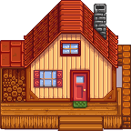
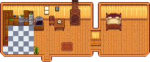
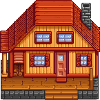
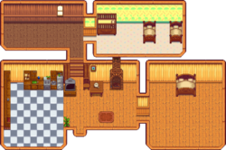
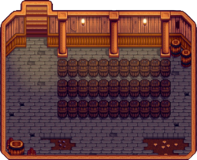

Casa de campo

La Casa de Campo es la residencia permanente del jugador en Stardew Valley. Inicialmente, sólo cuenta con una pequeña habitación que contiene una cama individual, una chimenea, un viejo televisor (ya sea un Televisor barato o un Televisor de suelo), diferentes objetos de decoración, en función del estilo de granja que hayas elegido y una alfombra, todo lo cual puede cambiarse y ampliarse más adelante. La superficie exterior de la casa de campo es un rectángulo de 6x9. La chimenea puede moverse haciendo clic izquierdo o encenderse haciendo clic derecho sobre ella.
El suelo y el papel de pared se pueden cambiar usando patrones comprados en la Tienda local Pierre's o en MercaJoja, o de un Catálogo. Se pueden añadir nuevos muebles (incluidas chimeneas) en cualquier momento.
Las mejoras de la casa pueden comprarse en la Carpintería. Cada nueva habitación añadida al actualizar puede tener sus propios patrones de suelo y papel de pared.
Al casarse o hacer que Krobus se mude como compañero de piso, el juego añade automáticamente una habitación extra basada en el estilo de ese personaje.
Interior

Mejoras
Robin necesita tres días para completar cada mejora de la casa de campo. Las renovaciones se hacen al instante. Las renovaciones se desbloquean tras completar la segunda mejora de la casa de campo.
| Mejora | Exterior | Interior | Precio | Cambios |
|---|---|---|---|---|
| 1 |  |  |
|
Añade una cocina, con un mostrador que permite cocinar, y una nevera que funciona como cofre. Los objetos de la nevera se pueden usar al cocinar aunque no estén en el inventario del jugador. Añade un dormitorio. Mejora la cama de individual a doble. Permite el matrimonio. |
| 2 |  |  |
|
Añade dos nuevas habitaciones, una vacía y otra con una cuna y dos camas de niños, lo que permite al jugador tener hijos. La cocina y el dormitorio son más grandes. Desbloquea las renovaciones. |
| 3 |  | Añade una bodega bajo la casa, a la que se accede a través de la cocina. La bodega alberga toneles que pueden envejecer productos como el queso y el vino para aumentar su calidad y valor. La bodega viene con 33 toneles, aunque puede albergar hasta 189 toneles. |
Renovaciones
Después de mejorar la casa de campo por 2ª vez, Robin ofrece renovaciones de la casa. Las renovaciones se completan al instante. Todas las renovaciones pueden reembolsarse en su totalidad en cualquier momento, siempre que el área ampliada no esté ocupada. Los reembolsos también se completan al instante.
| Renovación | Imagen | Precio | Comentarios |
|---|---|---|---|
| Eliminar la cuna | Gratis | Impide al jugador tener más hijos | |
| Abrir el dormitorio | |||
| Añadir habitación al sur |  |
||
| Añadir habitación esquinera | |||
| Expandir habitación esquinera |  |
||
| Añadir ático | |||
| Cubículo | |||
| Comedor | |||
| Abrir comedor |
Habitaciones para cónyuges/compañeros
Tenga en cuenta que el loro de Emily no será visible para nadie en multijugador que no haya visto su evento de 4 corazones.


Logros
Hay 2 logros relacionados con la casa de campo.
- Mejorando (Mejora tu casa.)
- Viviendo a lo grande (Mejora tu casa hasta el tamaño máximo.)
No hay ningún logro por mejorar la casa de campo por tercera vez (que añade la bodega).
Notas
- El icono de la lupa sobre el montón de leña a la izquierda de la granja está relacionado con la misión de "El misterioso Qi".
- En lugar de juntar 450 de madera para la primera mejora de la Casa de campo, puedes comprar toda la madera en la Carpintería durante el primer año por
 4500o, o durante el segundo año y en adelante por 22 500o. El costo total para la mejora sería 14 500o en el Año 1, o 32 500o en el Año 2+.
4500o, o durante el segundo año y en adelante por 22 500o. El costo total para la mejora sería 14 500o en el Año 1, o 32 500o en el Año 2+.
Historial
- 1.0: Introducido.
- 1.1: Añadidas dos habitaciones específicas al casarte con Shane o Emily. Introducida la mejora de la bodega. Ahora se puede cambiar el Papel de pared de los pasillos dentro de las casas mejoradas.
- 1.3: La granja minera y salvaje vienen con una chimenea de piedra en lugar de una chimenea de ladrillo. Las chimeneas ahora son muebles movibles.
- 1.4: Se agregó una habitación única para Krobus cuando se convierte en el compañero de habitación del jugador.
- 1.5: Añadida la opción de mover camas. Renovaciones de la casa agregadas.
- 1.6: Se agregaron cuatro nuevas renovaciones de la casa: comedor, ático, habitación de la esquina extendida y cubículo. La mayoría de las renovaciones ahora cuestan dinero. Se ha añadido la opción de mover la casa de campo. Se cambió el costo de la mejora de la segunda casa de 50 000o y 150 de Madera noble a 65 000o y 100 de Madera noble.